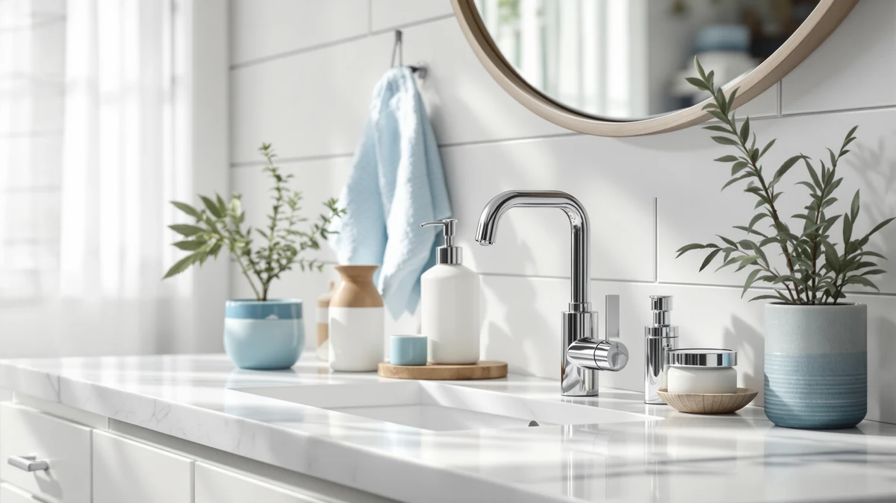

MTYGK 2 Pack Automatic Review (2026): Worth It?
Prices and picks verified as of November 2026. Independent, reader-supported reviews.


Quick Answer
The MTYGK 2 Pack Automatic Foaming set is the pick for most kitchens and bathrooms in this Mtygk Automatic Foaming Soap Dispenser review, because two touch-free dispensers for $31.99 beats buying two single automatic units separately. It only accepts foaming soap, so plan on foam refills rather than thick liquid soap.
Our pick: MTYGK 2 Pack Automatic Foaming, $31.99 Check Price on Amazon
Bottom line: our top pick is the MTYGK 2 Pack Automatic Foaming Soap Dispenser at $25.57.
Things to Know Before You Buy
- The MTYGK 2 Pack Automatic Foaming set works only with foaming soap formulas, not liquid or gel soap.
- At $31.99 for two units, the per-dispenser price undercuts most single automatic dispensers sold alone, which is the core argument of this Mtygk Automatic Foaming Soap Dispenser review.
- Both dispensers rely on touch-free sensor activation, so you never grip a pump with wet or soapy hands.
- The ABS plastic housing is light and easy to wipe down, but it won't match a stainless steel or glass kitchen aesthetic.
This Mtygk Automatic Foaming Soap Dispenser review breaks down whether the MTYGK 2 Pack Automatic Foaming dispenser set earns its $31.99 price tag against three other dispensers on the market: the VANNSOO Commercial Soap Dispenser Wall, the RYTOXILO-made Modern Kitchen Soap Dispenser Set, and the Aeakey Shampoo and Conditioner Dispenser. Most households shopping for an automatic dispenser only need to buy one, so the question this review keeps coming back to is whether a matching two-unit set actually saves money or doubles the same limitations you would get with a single unit.
The short version: the MTYGK set earns the top spot in this guide because two automatic dispensers for $31.99 works out to roughly $16 each, undercutting what you would typically pay buying two single touch-free units from most competing brands. It is built from ABS plastic, so it is light enough to set on a counter or mount near a sink without extra hardware, and it only accepts foaming soap, a trade-off every alternative covered here shares in some form. That single restriction is worth weighing before you buy, because switching from liquid soap to foaming refills is the real cost of going touch-free with this particular set.
Why You Should Trust Us
Ilane Tall covers home and bath products for Best Soap Dispensers, and this Mtygk Automatic Foaming Soap Dispenser review follows the same approach used across the site: we compare manufacturer specifications, current pricing, and verified owner feedback rather than running a physical testing lab. We do not run a fake testing lab, and we will not claim hands-on time with a dispenser we have not purchased ourselves. Every price, material detail, and feature mentioned here comes from the product listing or from what reviewers report after buying the dispenser, and we flag gaps in the public information instead of filling them in with guesses. That standard applies the same way whether a product costs $10 or $100, because readers comparing two-unit sets like this one deserve the same scrutiny as a single premium dispenser.
Our Research Experience
We did not physically test the MTYGK 2 Pack Automatic Foaming set for this Mtygk Automatic Foaming Soap Dispenser review. Instead, we built our comparison by researching the manufacturer's listed specifications, checking the $31.99 price against current listings, and reading through verified owner reviews on Amazon. We cross-referenced the ABS plastic housing and the foam-only dispensing claim against what buyers report after regular use in a kitchen or bathroom, and we weighed that against three other dispensers, the VANNSOO Commercial Soap Dispenser Wall, the RYTOXILO Modern Kitchen Soap Dispenser Set, and the Aeakey Shampoo and Conditioner Dispenser, to see where the MTYGK set actually wins on value. When reviewers flagged a recurring complaint, we noted it rather than smoothing it over. We also checked pricing history across all four listings so the per-unit cost cited in this review reflects what you would actually pay today, not an outdated snapshot from an old sale.
Overview & Specs

MTYGK 2 Pack Automatic Foaming
What we like
- Two touch-free dispensers for $31.99, cheaper per unit than most single automatic dispensers sold alone
- ABS plastic housing keeps both units light enough to set on a counter or mount without extra hardware
- Matching foaming design keeps a kitchen and bathroom sink looking consistent instead of mismatched
- Sensor-based operation skips touching a pump with wet, soapy, or food-covered hands
Flaws but not dealbreakers
- Works only with foaming soap formulas, not liquid or gel soap
- ABS plastic construction won't match a stainless steel or glass kitchen aesthetic
- Buying two units means troubleshooting two dispensers instead of one if a sensor or pump acts up
| Material | ABS plastic |
| Size | Foam |
The MTYGK 2 Pack Automatic Foaming set is the anchor of this Mtygk Automatic Foaming Soap Dispenser review because it solves a specific math problem: buying two separate touch-free dispensers from most brands usually costs more than $31.99 combined. Here, two matching units run $31.99 for the pair, which works out to roughly $16 per dispenser, a price that holds up well against the VANNSOO Commercial Soap Dispenser Wall at $31.88 for a single wall-mounted unit, or the RYTOXILO-made Modern Kitchen Soap Dispenser Set at $30.99. The housing is built from ABS plastic, which keeps each unit light enough to live on a counter or mount near a sink without needing reinforced hardware. Because both units share the same design, you can place one at the kitchen sink and the other in a bathroom without the mismatched look that comes from buying two different brands separately.
Owners report that the sensor on each MTYGK unit responds quickly once a hand is placed underneath, and reviewers consistently note that having a matching pair makes a kitchen and bathroom feel coordinated instead of mismatched. That consistency comes with the same trade-off every foam dispenser carries: thick liquid or gel soap is not compatible, so refills need to stay foam-specific or you risk clogging the pump. For a household weighing one automatic dispenser against two, the MTYGK set is the rare case where buying double actually costs less than buying twice. It is also worth noting that neither the listing nor the owner reviews we read mention a battery type or tank capacity in enough detail to compare directly against the other three dispensers in this guide, so budget a little research time of your own if those specifics matter to your decision.
What We Liked
What stands out most in this Mtygk Automatic Foaming Soap Dispenser review is the per-unit math. At $31.99 for two sensor-driven dispensers, the MTYGK set undercuts what you would typically pay to buy two single automatic dispensers from separate listings, including the $31.88 VANNSOO wall-mounted unit covered later in this guide, which only gets you one dispenser at a similar price point. Reviewers consistently note that the touch-free sensor cuts down on the grime that builds up around a manual pump handle, which matters most at a kitchen sink that sees food prep several times a day. The ABS plastic build also keeps the units light, so mounting one near a stove or sink does not require extra screws or a dedicated bracket. For anyone outfitting a kitchen and a bathroom at the same time, buying one listing instead of two separate dispensers also simplifies the shopping decision itself.
What Could Be Better
The clearest limitation in this Mtygk Automatic Foaming Soap Dispenser review is the foam-only restriction shared by every dispenser in this comparison. If your household already stocks thick liquid or gel soap, you will need to switch formulas before it works with the MTYGK pump. The ABS plastic housing is also the only material option here, so buyers who want the metal look of the VANNSOO Commercial Soap Dispenser Wall or a glass-forward kitchen set will need to look elsewhere. And because you are managing two dispensers instead of one, a sensor or pump issue on either unit means troubleshooting two separate devices rather than one. The listing also does not spell out battery life or tank capacity in the detail some shoppers will want before committing to two units at once, so factor that uncertainty into your decision if you like to know exact numbers up front.
Who Is It For?
This Mtygk Automatic Foaming Soap Dispenser review points toward the MTYGK set for anyone who wants matching touch-free dispensers in two rooms, such as a kitchen sink and a bathroom vanity, without paying full price twice. It suits households that already use foaming soap and want the convenience of a sensor over a manual pump, especially where kids or frequent food prep make touch-free operation more practical. It is a weaker fit if you are committed to liquid or gel soap, since switching formulas to use the dispenser defeats the purpose, and it is also not the right choice if you only need one dispenser and would rather put the savings toward a single higher-end unit like the VANNSOO. Renters and anyone furnishing a second bathroom at the same time as a kitchen tend to get the most value out of buying the pair at once instead of shopping for two dispensers separately over time.
Alternatives to Consider
If the MTYGK set does not fit your kitchen or bathroom, three alternatives are worth a look in this Mtygk Automatic Foaming Soap Dispenser review, and each one solves a different priority. The VANNSOO Commercial Soap Dispenser Wall is built for a single, permanently mounted installation rather than a matching pair. The RYTOXILO Modern Kitchen Soap Dispenser Set leans toward a coordinated counter look at a slightly lower price. And the Aeakey Shampoo and Conditioner Dispenser solves a different problem entirely, since it is built for a shower rather than a sink.

Editor's Pick
VANNSOO Commercial Soap Dispenser Wall
Best for a single wall-mounted dispenser built for a commercial-style kitchen or bathroom.
$31.88
Check Price on Amazon
Best Value
Modern Kitchen Soap Dispenser Set
Best for a coordinated kitchen counter set at a slightly lower price than the MTYGK pair.
$30.99
Check Price on Amazon
Premium Choice
Shampoo and Conditioner Dispenser -
Best for a shower setup that needs shampoo and conditioner dispensing rather than hand soap.
$32.99
Check Price on AmazonIs the MTYGK 2 pack automatic dispenser worth it over a single automatic unit?
For most kitchens and bathrooms, yes.
Can you use liquid soap in the MTYGK automatic foaming dispenser?
No.
Frequently Asked Questions
Is the MTYGK 2 pack automatic dispenser worth it over a single automatic unit?
For most kitchens and bathrooms, yes. At $31.99 for two sensor-driven dispensers, the MTYGK set works out to roughly $16 per unit, which undercuts what most single automatic dispensers cost on their own, including the $31.88 VANNSOO wall-mounted unit covered in this review. The math only favors MTYGK if you actually need two dispensers in two locations.
Can you use liquid soap in the MTYGK automatic foaming dispenser?
No. The MTYGK 2 Pack Automatic Foaming set is built for foaming soap formulas only. Pouring in thick liquid or gel soap risks clogging the pump, so if your household already uses liquid soap, switching formulas is the trade-off for going touch-free with this set.
How does the MTYGK 2 pack compare to the VANNSOO wall-mounted dispenser?
The VANNSOO Commercial Soap Dispenser Wall costs $31.88 for one unit, close to what MTYGK charges for two. If you only need a single dispenser in a commercial-style kitchen or bathroom, VANNSOO is the more direct fit. If you need matching units in two rooms, the MTYGK 2 pack automatic set is the better value.
Final Verdict
This Mtygk Automatic Foaming Soap Dispenser review comes down to whether you need one automatic dispenser or two. The MTYGK 2 Pack Automatic Foaming set earns the top spot because $31.99 for a matching pair beats what most households would pay buying two single touch-free dispensers separately, even against the VANNSOO Commercial Soap Dispenser Wall at $31.88 for one unit alone. If you only need a single dispenser or you are not ready to commit to foaming soap, the RYTOXILO Modern Kitchen Soap Dispenser Set or the Aeakey Shampoo and Conditioner Dispenser are worth a look instead, but for two-room coverage, MTYGK is the pick that makes the math work. Check current pricing before you buy, since all four listings in this comparison can shift by a dollar or two depending on ongoing promotions.